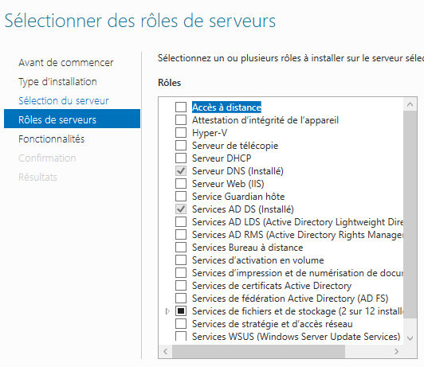
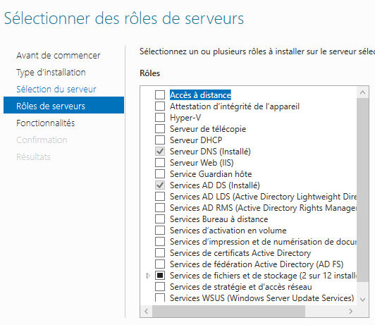

Installation d'un service DNS
Installation
Nous avons installé un serveur DNS sur un windows serveur.
Pour cela, on exécute les commandes suivantes :
Gérer > Ajouter rôles et fonctionnalités > Rôle DNS
clic droit sur le serveur > gestionnaire de dns


Configuration
Nous devons ensuite configurer le DNS pour permettre l'accès au web en avec une redirection de notre serveur dns vers le
dns de l'iut.
Pour configurer cette redirection, on exécute les commandes suivantes :
clic droit sur le nom de domaine > Propriété > Redirecteur > Mettre l’@IP du DNS de l’iut